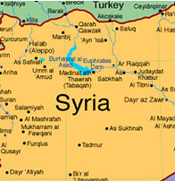

Water Scarcity, Human Security and Democratization
Aspects and Impacts of the Syrian Crisis
The Water for Food Institute is partnering with the International Arid Lands Consortium and the Center for Judaic Studies, the program in Global Studies, the Department of Political Sciences and the Forsythe Foundation in Human Rights and Humanitarian Affairs at the University of Nebraska-Lincoln to organize a conference on water and humanitarian aspects of the Syrian Crisis. The conference is open to public.
REGISTER HERE
April 19th 2016 - Nebraska Innovation Center University of Nebraska-Lincoln

THE SYRIAN CRISIS
CONFERENCE SCHEDULE
PARTICIPANTS
FACTS & STORIES